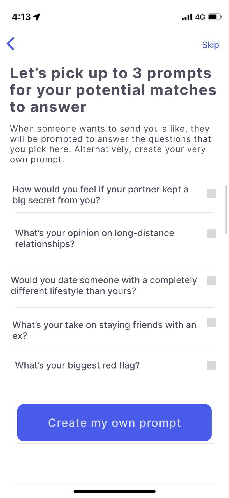

Case study · Product management
A new feature for the dating app, designed in an 8-week product programme run by a student club, with mentoring from industry product managers.
People chat for days on dating apps before realising they were never compatible.
A feature where you answer one of their prompts to send a like, so values come out before you match.
A Figma prototype, a launch plan and success metrics, shaped by user interviews and mentor feedback.
4 people · Jan – Mar 2025
User interviews, Figma, PR/FAQ
On dating apps, people can't filter out mismatches early. Photos and short prompts show a snapshot, but not how someone thinks or what they value. So people spend days chatting before realising they were never compatible.
"After chatting with him for close to 2 weeks, I'm starting to realise we may not be on the same wavelength."
"He likes sushi just like me... but I wonder if his timeline for settling down aligns with mine."
Pain points from our user research journey map
Profiles show photos and prompts, but miss values and how people actually think.
People chat for days before finding a dealbreaker that could have been obvious from the start.
Everyone is stuck with generic openers and small talk, so sincere people look the same as everyone else.
Each person picks up to three prompts that matter to them. To send them a like, you answer one. They see your answer before deciding to match, so values and dealbreakers come out before any chatting starts.

Our Figma prototype. Profile photos are blurred for privacy.
We planned alpha testing, a beta, then an A/B test before launch, tracking engagement and retention. We were also honest about the risks: some people might find answering prompts too much effort, there could be fewer matches overall, and early rejections could feel harsh.
What I'd do differently
Put a rough version in front of real users before polishing the prototype. Our mentor pointed out the big open question: would people, especially guys, find answering prompts worth the effort? Next time I'd test that early, and add guardrail metrics to check that sign-ups, likes and chats don't drop because of the feature.
Aim for a painkiller, not a vitamin. The best ideas come from pain points that research has really validated.
Staying open to change helps you find the best fix, even if it means letting go of your favourite idea.
Test the problem, the solution and the prototype. If you can only ask a few people, ask different people each time.
Dating apps taught me that a lot goes unsaid. People want authenticity, but they also want to put their best self forward, so you have to listen for what users mean, not just what they say.